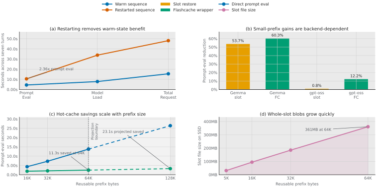

Abstract
These figures summarize the current Flashcache benchmark evidence. The results do not merely show that prompt caching exists; they show where SSD-backed inference state may become useful for ordinary local-agent machines. Warm sessions are much cheaper than restarted sessions, exact replay is only a control, small-prefix gains depend on backend behavior, larger stable prefixes produce larger absolute savings, and whole-slot files grow quickly enough that the next layer must measure and optimize partial restore, layout, and I/O.
Primary Figures
Figure 1 combines the current evidence into a single paper-style panel. Solid lines and bars are measured data; dashed or target lines mark projection and intended future work.

{kind=link}
{kind=link}

{kind=link}
Computed Results
These are the numeric claims used by the figures. Projection values are marked separately from measured values.
| Claim | Direct / baseline | Cache / target | Delta |
|---|---|---|---|
| Warm vs restarted prompt eval | 10.46s restarted | 4.43s warm | 2.36x gap |
| Exact replay control | 462ms first run | 74ms second run | known primitive |
| gpt-oss-20b small-prefix Flashcache | 8.42s | 7.40s | 12.2% saved |
| 64KB large-prefix Flashcache | 81.95s | 70.56s | 11.39s saved |
| 128KB large-prefix projection | 164.9s projected | 141.9s projected | 23.0s projected saved |
| 64KB whole-slot SSD cost | 64KB reusable prefix | 361MB slot file | optimize layout next |
Supplementary Figures
The individual plots remain available for inspection and regression checks. They are generated from the same script and exported in SVG, PDF, and PNG formats.


Methods And Reproduction
Figures are generated by benchmarks/plot_benchmark_graphs.py from raw benchmark JSON. The computed table is written to docs/assets/benchmark-graphs/chart-data.json.
python3 -m pip install -r requirements-dev.txt
python3 benchmarks/plot_benchmark_graphs.py
Source inputs are under benchmarks/datasets/printtestbot-printing-press-2026-06-02/raw/ and benchmarks/datasets/printtestbot-large-prefix-2026-06-02/raw/. The next measurement round should split prefill, restore, save, SSD read/write bytes, memory copy, accelerator upload, and changed-tail evaluation.